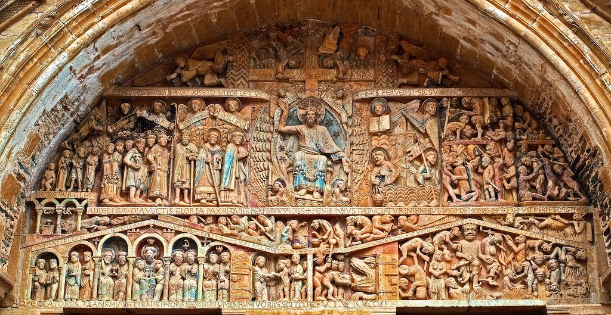
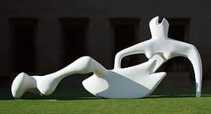

La historia de la escultura es una parte de la historia del arte que estudia la evolución de la escul
tura, desde sus principios teniendo en cuenta las diferentes culturas del mundo y los períodos históricos que suelen c
oincidir con los de la propia historia del arte. A lo largo del tiempo, muchas de sus formas y herramientas utilizadas sig
uen siendo las mismas o similares.1La historia de la escultura es una parte de la historia del arte que estudia la evolución de la es
cultura, desde
sus principios teniendo en cuenta las diferentes culturas del mundo y los períodos históricos qu
e suelen coincidir con los de la propia historia del arte. A lo largo del tiempo, muchas de sus formas y herramientas utiliz
adas siguen siendo las mismas o similares.
Los escultores medievales y renacentistas trabajaban en colaboración con otros artesanos y solían tener gra
ndes talleres, en estos locales podían trabajar muchos ayudantes y oficiales, y el maestro escultor era el encargado de l
a finalización de las obras. Por otra parte, detrás del arte han existido grandes mecenas, el patronazgo de los cuales, en algunos casos, se
prolongaba durante toda su vida. Más recientemente, a partir del siglo XIX, los escultores dependen normalmente de las galerías de arte públicas y privadas donde se exponen las obras de cara a su venta, ya que los encargos para proyectos civiles son relativamente poco habituales.
- Edad Antigua
¿Cómo era la escultura en la Edad Antigua?
- Época arcaica (del siglo VII al siglo VI a.C.) Las esculturas desde un primer momento se centraron en la figura humana tanto en imágenes en relieve como en otras sin el. Cambian las formas geométricas y se definen mejor las partes del cuerpo, lo cual denota una intención de expresar movimiento.

- Edad Media
Es un periodo en el que los temas predominantes tienen que ver con la religión: figuras en bulto redondo de Cristos, Vírgenes y santos para el culto, sobre todo en madera policromada; y, en relieve, escenas sacras pero también fantásticas o mitológicas

- Edad Moderna
La escultura moderna es una disciplina artística donde se ve implicada una acción, la de esculpir, moldear, fundir, tallar o cincelar un material, el cual puede ser piedra o mármol, marfil, huesos, barro, arcilla, bronce, oro, madera, entre otros muchos materiales
